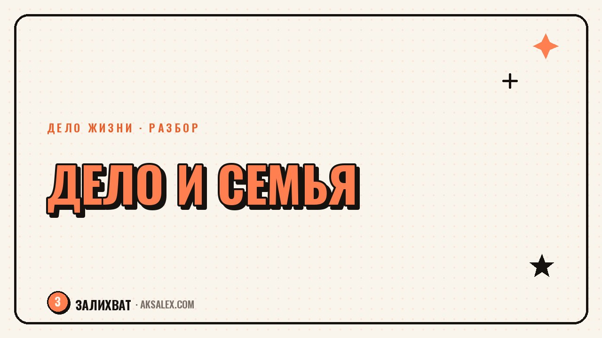

Дело отвлекает от семьи: как перестать разрываться

Вечер, ты закрываешь ноутбук, и вместо облегчения приходит вина: опять весь день был занят делом, а с ребёнком поиграл десять минут, партнёру не хватило внимания, с мамой не поговорил по телефону. Чувство вины, что дело отвлекает от семьи, знакомо почти всем, кто начал заниматься чем-то своим серьёзно. Разберёмся, откуда оно берётся и что с ним делать, не бросая ни дело, ни близких.
Откуда берётся чувство, что ты разрываешься между делом и семьёй
Это чувство редко возникает из реального дефицита времени - чаще из внутреннего убеждения, что хорошая мать, жена или дочь должна быть доступна всегда, а дело - это что-то вторичное, личная прихоть, которую нужно оправдывать. Отсюда и вина: ты тратишь время не на безусловно правильное - семью, а на то, что можно было бы отложить.
Есть и вторая причина - сравнение с теми, кто, кажется, справляется легко: у соседки и бизнес растёт, и дети накормлены, и дом в порядке. На самом деле за кадром остаются няни, помощники, партнёр, который взял часть нагрузки, или более спокойное отношение к беспорядку. Сравнение себя с чужой витриной почти всегда проигрышное занятие.
Как отличить реальную проблему от чувства вины
- Ребёнок явно недополучает внимания - жалуется, замыкается, просит остаться
- Партнёр прямо говорит о нехватке совместного времени, а не ты сам это предполагаешь
- Ты физически не высыпаешься и не успеваешь закрыть базовые задачи по дому
- Чувство вины появляется даже в дни, когда семья рядом и довольна
Разница между виной и реальным перекосом в приоритетах
Вина - это эмоция, которая не всегда говорит правду о ситуации. Она может появляться, даже когда баланс в порядке, потому что общество учит женщин и мужчин по-разному относиться к своему делу: от женщины чаще ждут, что семья - это всегда первое, а дело - вторым планом, из-за чего вина накрывает сильнее.
Вина не измеряет, сколько реально времени ты провёл с семьёй. Она измеряет, насколько ты боишься быть недостаточно хорошим родителем или партнёром - а это два разных вопроса.
Стоит честно посчитать, сколько часов в неделю уходит на дело и сколько на семью, прежде чем доверять только ощущениям. Часто выясняется, что время распределено разумно, а вина появляется из-за одного тяжёлого дня или сравнения с идеальной картинкой в голове, а не из-за системной проблемы.
Как распределить время: практический подход
Жёсткое разделение дня на блоки помогает снизить и тревогу, и реальные конфликты. Если дело требует концентрации несколько часов утром, а вечер целиком принадлежит семье без телефона в руках - мозг быстрее перестаёт разрываться, потому что знает: сейчас время для одного, потом для другого.
| Подход | Плюс | Минус |
|---|---|---|
| Жёсткие блоки времени в дне | Снижает тревогу, чёткие границы | Требует дисциплины и предсказуемого графика |
| Гибкий график без фиксации | Удобен при нестабильной нагрузке | Легко скатиться в постоянную доступность для всех |
| Один выходной полностью без дела | Семья точно знает, когда ты рядом | Нужно заранее закрыть рабочие вопросы |
| Делегирование части задач по дому | Освобождает часы для дела и семьи | Требует бюджета или готовности близких помогать |
Разговор с семьёй о своём деле
Многие проблемы снимаются не перераспределением часов, а честным разговором. Партнёр и дети часто реагируют не на само отсутствие рядом, а на ощущение, что их не предупредили и не объяснили, зачем это дело важно и что оно даёт семье в перспективе - не только деньги, но и твоё состояние, уверенность, пример для детей.
Что обсудить с близкими
- Какие часы и дни точно принадлежат только семье
- Что делать, если дело требует срочного внимания в семейное время
- Как ребёнок может участвовать в деле, если это уместно - не как обязанность
- Что получает семья от того, что дело развивается
Когда действительно стоит притормозить
Бывают периоды, когда перекос реален - запуск, кризис, крупная сделка, и в такие моменты дело временно забирает больше. Это нормально, если период ограничен и семья об этом знает заранее. Тревожный сигнал - когда таких периодов становится больше, чем спокойных, и семья перестаёт верить, что временное положение когда-нибудь закончится.
Частые вопросы
Как понять, что дело действительно отвлекает от семьи, а не это только вина?
Смотри на факты, а не на ощущения: жалуется ли партнёр или ребёнок прямо, успеваешь ли закрывать базовые семейные задачи, высыпаешься ли. Если факты в порядке, а тревога осталась - скорее всего, это вина, а не реальный перекос.
Что делать, если партнёр недоволен, сколько времени занимает дело?
Стоит сесть и честно обсудить, сколько часов в неделю уходит на дело и сколько на семью, без оправданий и обвинений. Часто помогает заранее договориться о фиксированных часах, когда ты точно не доступен для дела.
Можно ли совмещать своё дело с маленьким ребёнком без чувства вины?
Можно, если честно распределить время и не требовать от себя идеального баланса каждый день. Чувство вины снижается, когда есть чёткие границы и семья понимает, зачем это дело важно.
Почему вина перед семьёй сильнее у тех, кто начал своё дело позже остальных?
Часто добавляется страх, что потраченное на дело время уже нельзя вернуть и наверстать с детьми. Это усиливает тревогу, но не делает её более точным отражением реальности - важно отделять страх от факта.
Как объяснить ребёнку, почему ты часто занят делом?
Простыми словами, без сложных оправданий: расскажи, чем занимаешься и почему это важно, и обязательно выделяй время, которое полностью принадлежит ему. Дети хуже переносят непредсказуемость, чем сам факт занятости родителя.
Раз тема оказалась полезной, вот что почитать следующим. Партнёрки дают доход блогу, если выбирать продукты честно и не превращать рекомендации в рекламный спам.
Читать статью →а не вручную